|
Track of the Cat
See Delphi and Die: A Marcus Didius Falco Mystery
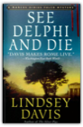
Lindsey Davis
It’s A.D. 76 during the reign of Vespasian, and Marcus Didius Falco, a Roman “informer,” has achieved much in his life. He’s joined the equestrian rank, allowing him to marry Helena Justina, the Senator’s beloved daughter. But now he’s just been hired to undergo a dangerous mission: to pry his brother-in-law Aulus, a scholar on the way to study in Athens, away from a murder investigation involving two dead women at the ancient site of the Olympic Games. Traveling to Greece under the guise of being tourists, Falco and Helena visit the country’s classic sites in order to investigate the suspicious goings-on and shady dealings of Seven Sights, a fly-by-night travel agency. What begins as a risky expedition becomes sinister when Aulus, too, goes missing. Lindsey Davis' See Delphi and Die is Falco’s most complex and high-stakes case yet.
Princessa na Kirieshkah: Evlampija Romanova. Sledstvie vedet diletant #15

The Bookman's Wake
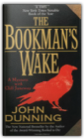
John Dunning
Denver cop-turned-bookdealer Cliff Janeway is lured by an enterprising fellow ex-policeman into going to Seattle to bring back a fugitive wanted for assault, burglary, and the possible theft of a priceless edition of Edgar Allan Poe's "The Raven." The bail jumper turns out to be a vulnerable young woman calling herself Eleanor Rigby, who is also a gifted book finder.Janeway is intrigued by the woman — and by the deadly history surrounding the rare volume. Hunted by people willing to kill for the antique tome, a terrified Eleanor escapes and disappears. To find her — and save her — Janeway must unravel the secrets of the book's past and its mysterious maker, for only then can he stop the hand of death from turning another page.... The Bookwoman's Last Fling
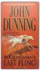
John Dunning
In another enthralling bestseller by "master yarn spinner" (Chicago Sun-Times) John Dunning, rare book dealer and relentless private eye Cliff Janeway unravels a deadly plot marked by stolen classics and stable secrets.When wealthy horse trainer H. R. Geiger dies, Denver bookman Cliff Janeway encounters the legacy of the man's wife, Candice, a true bookwoman who left behind an assortment of rare first-edition children's books. Sent to assess the collection, Janeway soon finds that several titles are missing, replaced by cheap reprints — while other hugely expensive pieces remain. Why would a thief take one priceless book and leave an equally valuable volume on the shelf? Suspecting foul play, Janeway follows the trail of Candice's shadowy past to California's Golden Gate and Santa Anita racetracks, where he signs on as a racehorse hot walker. Eavesdropping on the chatter among the hands, he doesn't like what he hears. And when he goes to the house where Candice died to look for answers, Janeway finds much more than he bargained for. The Smoke Jumper

She has brought them here by court order on a youth program to help them find themselves. But one among them will be lost forever. For soon the cocoon of fire will hatch to engulf the entire mountain and exact its deadly toll. And into this inferno will come ... The Smoke Jumper. His name is Connor Ford and he falls like an angel of mercy from the sky, braving the flames to save the woman he loves but knows he cannot have. For Julia Bishop is the partner of his closest friend, Ed Tully, an ambitious young musician. Julia loves them both but the tragedy on Snake Mountain forces her to choose between them and burns a brand on all their hearts. With his blond, blue-eyed looks and laconic cowboy charm, Connor is the only child of a Montana rancher and a rodeo queen. Until that fateful day, he has been happy to spend his winters nurturing a career as a photographer and his summer vacations with Ed, “smoke jumping” — being dropped by parachute to fight remote forest fires. In the wake of the fire, he embarks on a journey to the dark heart of human suffering, traveling the world’s worst wars and disasters to take photographs that find him fame but never happiness. Reckless of a life he no longer wants, again and again he dares death to take him, until another fateful day on another continent, he must walk through fire once more.... After his two international bestsellers, The Horse Whisperer and The Loop, Nicholas Evans returns with an epic novel of love and loyalty, of guilt and honor. Moving from the towering wilds of the American West to the killing fields of Africa, The Smoke Jumper is the story of three people’s quest for happiness and self-fulfillment, played out against the heroism of fire fighting in the wilderness and photojournalism at the edge of human experience — a mesmerizing adventure for the spirit, told in the grandest tradition. What Came Before He Shot Her Book
The anatomy of a murder, the story of a family in crisis, What Came Before He Shot Her is a powerful, emotional novel full of deep psychological insights, a novel that only the incomparable Elizabeth George could write. The Edge Of The Crazies
As more of the town's prominent citizens start turning up dead, the pressure on Jules keeps rising. It starts to look like this rookie sheriff may not survive the next election...if he lives to see it. The Dark Wind

The Sinister Pig

Why did the Washington office of the FBI snatch custody of this case from its local agents, cover it with secrecy, and call it a hunting accident? What was the victim seeking among the maze of pipelines and pumping stations in America's largest gas field? Was he investigating the embezzlement of billions of dollars from the Indian Tribal royalty trust in the Department of the Interior? On a level nearer to Chee's heart, did the photographs Bernie Manuelito took on an exotic game ranch near the Mexican border reveal something connected with this crime? Did Bernie, once a member of Chee's squad but now a rookie Border Patrol Officer, put herself in terrible danger? Tony Hillerman leads his readers through another of his intricate plots to the solution of this crime, with a cast of vivid characters: a Washington political mogul and his more-or-less renegade pilot; a customs official who bends the rules; a Mexican smuggler with a conscience; and, finally, "Legendary Lieutenant" Joe Leaphorn, now retired, who connects the lines on a dusty old map to find the answers — and the Sinister Pig — among the great scimitar-horned oryx grazing on the historic Tuttle Ranch. 24 Hours
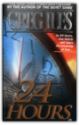
Greg Iles
Greg Iles's novels have been praised for their unusual depth of characterization and complexity of plot, and The Quiet Game was no exception. Reviewers called it "beautifully crafted" (The Providence Sunday Journal), "heartbreakingly honest" (Cleveland Plain Dealer), and simply "a grand thriller with a wonderful Southern seasoning" (The Orange County Register). In 24 Hours, Iles takes readers on a daringly executed roller-coaster ride with enough twists and surprises to last a lifetime.24 Hours begins with the perfect family. On the perfect night. About to become trapped in the perfect crime. Will Jennings is a successful young doctor in Jackson, Mississippi, with a thriving practice, a beautiful wife, and a five-year-old daughter he loves beyond measure. But Will and his family are being watched by a con man and psychopath who may be a genius. A man who has crafted the unbeatable crime. A man who has never been caught and whose victims have never talked to the police. A man whose life's work strikes at the heart of every family's unspoken fear: the unstoppable kidnapping. But this man has never met the likes of Will and Karen Jennings. Voices: An Inspector Erlendur Novel

The Christmas rush is at its peak in a grand Reykjavík hotel when Inspector Erlendur is called in to investigate a murder. The hotel Santa has been stabbed to death, and Erlendur and his fellow detectives find no shortage of suspects between the hotel staff and the international travelers staying for the holidays. As Christmas Day approaches, Erlendur must deal with his difficult daughter, pursue a possible romantic interest, and untangle a long-buried web of malice and greed to find the murderer. Voices is a brutal, soulful noir from the chilly shores of Iceland. Arctic Chill: An Inspector Erlendur Novel
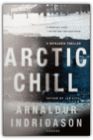
Arnaldur Indridason
INSPECTOR ERLENDUR RETURNS IN THIS ICY, INTENSE REYKJAVIK THRILLEROn an icy January day, the Reykjavik police are called to a block of apartments where a body has been found in the garden: a young, dark-skinned boy is frozen to the ground in a pool of blood. Erlendur and his team embark on their investigation and soon unearth tensions simmering beneath the surface of Iceland’s outwardly liberal, multicultural society. Meanwhile, the boy’s murder forces Erlendur to confront the tragedy in his own past. Master crime writer Arnaldur Indridason's Arctic Chill renders a vivid portrait of Iceland's brutal, little-known culture wars in a taut, fast-paced police procedural. A Noble Radiance
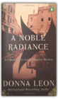
Donna Leon
Donna Leon has topped European bestseller lists for more than a decade with a series of mysteries featuring clever Commissario Guido Brunetti. Always ready to bend the rules to uncover the threads of a crime, Brunetti manages to maintain his integrity while maneuvering through a city rife with politics, corruption, and intrigue.In A Noble Radiance a new landowner is summoned urgently to his house not far from Venice when workmen accidentally unearth a macabre grave. The human corpse is badly decomposed, but a ring found nearby proves to be a first clue that reopens an infamous case of kidnapping involving one of Venice's most aristocratic families. Only Commissario Brunetti can unravel the clues and find his way into both the heart of patrician Venice and that of a family grieving for their abducted son. Dressed for Death
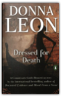
Donna Leon
Donna Leon’s Commissario Guido Brunetti series grows more popular in America with the publication of every new novel. In this installment, Brunetti’s hopes of a refreshing family holiday in the mountains are once again dashed when a gruesome discovery is made in Marghera—a body so badly beaten the face is completely unrecognizable. Brunetti searches Venice for someone who can identify the corpse, but he is met with a wall of silence. Then he receives a telephone call from a contact who promises some tantalizing information. And before the night is out, Brunetti is confronting yet another appalling, and apparently senseless, death.
Blood from a Stone
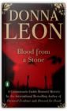
Donna Leon
Guido Brunetti, the hero of Donna Leon’s internationally bestselling crime series, is back, in a novel that combines an ingenious plot with an alluring portrait of contemporary Venice. On a cold December night, a Senegalese man who sells counterfeit fashion accessories is killed on the Campo Santo Stefano. What first appears to be a straightforward clash between rival dealers soon raises questions: What was a penniless foreigner doing with a fortune in diamonds? And why does Brunetti’s boss want him off the case? Fans of Donna Leon will be thrilled with Blood from a Stone, as Brunetti delves into the secrets of Venice’s immigrant community and continues to uncover corruption in the upper echelons of the government.
Friends in High Places
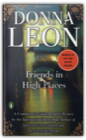
Donna Leon
The winner of the Crime Writers Association Macallan Silver Dagger?available for the first time in the United StatesDonna Leon?s sophisticated Commissario Brunetti series has won her legions of fans over the years. In Friends in High Places, Brunetti is visited by a young bureaucrat investigating the lack of official approval for the building of Brunetti?s apartment years before. What began as a red tape headache ends in murder when the bureaucrat is found dead after a mysterious fall from a scaffold. Brunetti starts an investigation that will take him into unfamiliar and dangerous areas of Venetian life, and will reveal, once again, what a difference it makes to have friends in high places. About Face
In About Face, Leon returns to one of her signature subjects: the environment, which has reached a crisis in Italy. Incinerators across the south of Italy are at full capacity, burning who-knows-what and releasing unacceptable levels of dangerous air pollutants, while in Naples, enormous garbage piles grow in the streets. In Venice, with the polluted waters of the canals and a major chemical complex across the lagoon, the issue is never far from the fore. Environmental concerns become significant in Brunetti’s work when an investigator from the Carabiniere, looking into the illegal hauling of garbage, asks for a favor. But the investigator is not the only one with a special request. His father-in-law needs help and a mysterious woman comes into the picture. Brunetti soon finds himself in the middle of an investigation into murder and corruption more dangerous than anything he’s seen before. The Return of the Dancing Master
It would be nearly two hours before he died. As if in a borderland of horror between the nagging pain and the hopeless will to live, he was taken back in time, to the occasion when he engaged the fate that had now caught up with him.—from The Return of the Dancing Master December 12, 1945. Nazi Germany lies in ruins as a British warplane lands in Buckeburg. A man carrying a small black bag quickly disembarks and travels to Hameln, where he disappears behind the prison gates. Early the next day, nine male and three female war criminals are hanged. Fifty-four years later, retired policeman Herbert Molin is found brutally slaughtered on his remote farm in Härjedalen, Sweden. At the murder scene, the police discover strange tracks in the blood on the floor...as if someone had been practicing the tango. Stefan Lindman, a young police officer on extended sick leave, hears about the murder of his former colleague and decides to investigate it himself. Lindman's inquiry becomes increasingly complex and dangerous as he uncovers the links between Herbert Molin's death and a global web of neo-Nazi activity. The Fifth Woman
In an African convent, four nuns and a unidentified fifth woman are brutally murdered—the death of the unknown woman covered up by the local police. A year later in Sweden, Inspector Kurt Wallander is baffled and appalled by two murders. Holger Eriksson, a retired car dealer and bird watcher, is impaled on sharpened bamboo poles in a ditch behind his secluded home, and the body of a missing florist is discovered—strangled and tied to a tree. The only clues Wallander has to go on are a skull, a diary, and a photo of three men. What ensues is a case that will test Wallander’s strength and patience, because in order to discover the reason behind these murders, he will also need to uncover the elusive connection between these deaths and the earlier unsolved murder in Africa of the fifth woman. The Man Who Smiled

The Man Who Smiled begins with Wallander deep in a personal and professional crisis after killing a man in the line of duty; eventually, he vows to quit the Ystad police force for good. Just then, however, a friend who had asked Wallander to look into the death of his father winds up dead himself, shot three times. Ann-Britt Höglund, the department's first female detective, proves to be his best ally as he tries to pierce the smiling façade of his prime suspect, a powerful multinational business tycoon. But just as he comes close to uncovering the truth, the same shadowy threats responsible for the murders close in on Wallander himself. All of Mankell's talents as a master of the modern police procedural—which have earned him legions of fans worldwide—are showcased in The Man Who Smiled, which is the fourth of the eight Wallander books published thus far in English. Faceless Killers
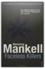
Henning Mankell
Winner of the CWA Gold Dagger for Sidetracked. One frozen January morning at 5am, Inspector Wallander responds to what he believes is a routine call-out. When he reaches the isolated farmhouse he discovers a bloodbath. An old man has been tortured and beaten to death, his wife lies barely alive beside his shattered body, both victims of a violence beyond reason. The woman supplies Wallander with his only clue: the perpetrators may have been foreign. When this is leaked to the press, it unleashes racial hatred. Kurt Wallander's life is a shambles: his wife has left him, his daughter refuses to speak to him, and even his ageing father barely tolerates him. He works tirelessly, eats badly, and drinks his nights away in a lonely, neglected flat. But now, with winter tightening and his activities being monitored by a tough-minded district attorney, Wallander must forget his troubles and throw himself into a battle against time and against mounting racial hatred.
Death In A White Tie
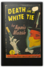
Ngaio Marsh
The season has begun. Debutantes and chaperones are planning their luncheons, teas, dinners, and balls, and the blackmailer is planning his strategies and stalking his next victim. Chief Detective Inspector Roderick Alleyn senses that something was up. He plants his friend Lord Robert Gospell at the scene, but when he arrives it becomes clear that someone else got their first.
|


My Library
Collection Total:
798 Items
798 Items
Last Updated:
Apr 7, 2013
Apr 7, 2013
 Made with Delicious Library
Made with Delicious Library